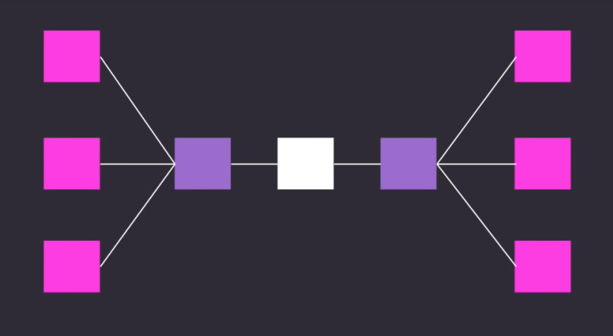
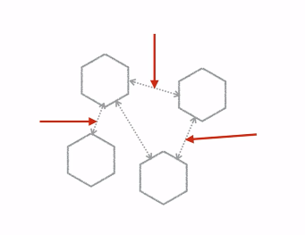

Monolithic to Microservice
Cloud Computing and Data Security, AIMed 2016
E. Kevin Hall, M.D.
Yale University
Disclosure
Founder, Archetyp Mobility
www.archetyp.io
Data Breaches are Very Real
The last 12 months have seen significant breaches.
2016 ICIT Report (1/2)
"Despite being the most at-risk and perpetually breached critical infrastructure sector in the Nation, virtually all health sector organizations refuse to evolve their layered security to combat a hyper evolving threat landscape…"
2016 ICIT Report (2/2)
"As a result, when a healthcare system is breached and patient records are stolen, the entire brutal impact of the incident that resulted from poor cybersecurity on behalf of the healthcare organization is forced onto the shoulders of the victim to deal with for the rest of their life."
- 2016, Institute for Critical Infrastructure Technology
2016 # Breaches with PHI or Health Info

(from Protenus.com)
2016 # of Records Breached

(from Protenus.com)
Notable Breaches this Year
- WADA cracked by Russian Espionage Group 'Fancy Bear', includes Olympic Athletes.
- Tunisian government inserted keyloggers between users and Facebook.
- (2014) We discovered 500m Yahoo records stolen in 2014 by suspected Nation State.
- (2012) We discovered 68m Dropbox records hacked in 2012 - only half upgraded.
Safety vs. Freedom
Every discussion of security eventually boils down to balance between security and freedom.
Each product or effort solidifies limits at the expense of freedoms and enables freedoms at the expense of limits.
(Excluding mistakes and bad design)
The Structure is Changing
From Monolith to Microservice.
As complexity increases, the benefits of moving left to right increase.
This change is fundamentally affecting primary security practices.
What is a Monolith?
A Monolithic Architecture is one where functionally separate software services are interwoven.
In the Past: Local Hardware.
Today: More and more moved to cloud, frequently still monolithic.
What are Microservices?
- New way to think about structuring applications.
- Moves infrastructure up to the application level.
- Can do infrastructure insertion.
- Single application as a suite of small services
- Each in its own process
- Communicating with lightweight mechanisms, often via HTTP network API
- Built around business capabilities
- Independently deployable
Fowler's Characteristics
- Componentization via services
- Organized around business capabilities
- Products not Projects
- Smart endpopints and dump pipes
- Decentralized Governance
- Decentralized Data Management
- Infrastructure Automation
- Design for Failure
- Evoluationary Design
Componentization
- Independently replacable.
- Independently upgradable.
Can either do this by software libraries or services.
In Microservices, we decide to do this as a service.
Design for Failure
Monolith vs. Microservices

Networking
- With microservices, what were once interprocess communications become network requests.
- There is real distribution cost in this approach: security, increased process time -> async and consistency.

Productivity (from Fowler)

Security Implications
With a monolith - when you break into the monolith one has access to the whole system. Can say anything to the database.
With a microservces approach, more agility:
- Can have some parts high-security risk and some low-risk.
- Can innovate really quickly in user experience and personalization.
- No need to have whole system with PCI or HIPAA compliance, most of app can be extremely agile and innovative.
- Tight control over narrow attack surface.